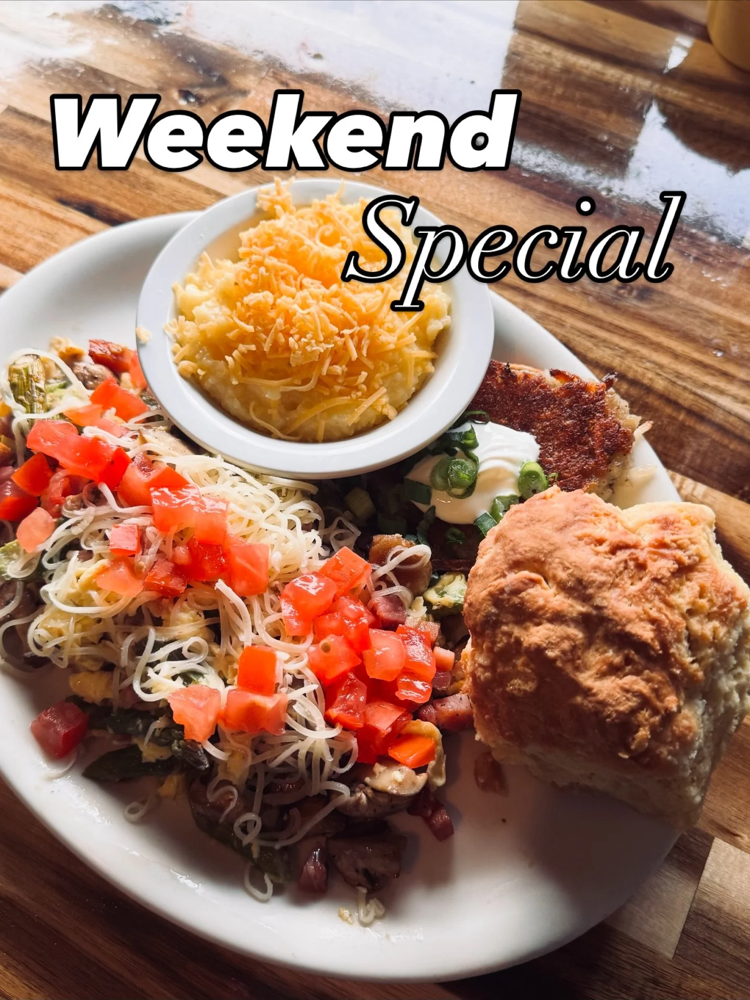
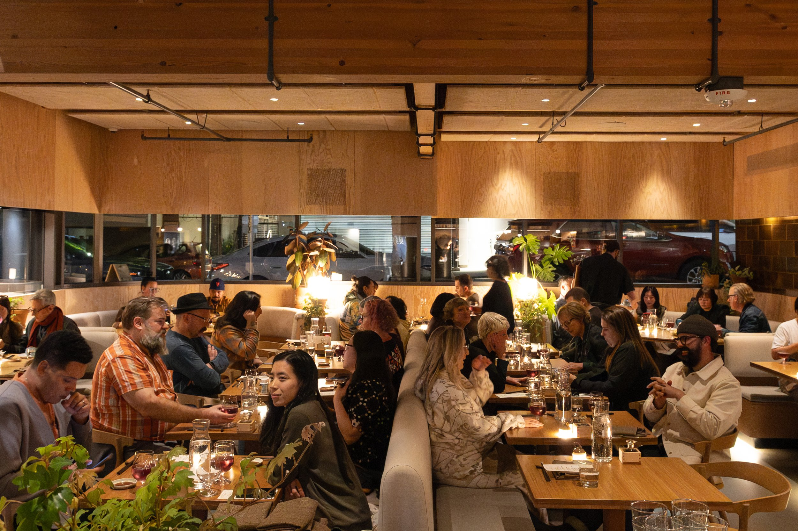
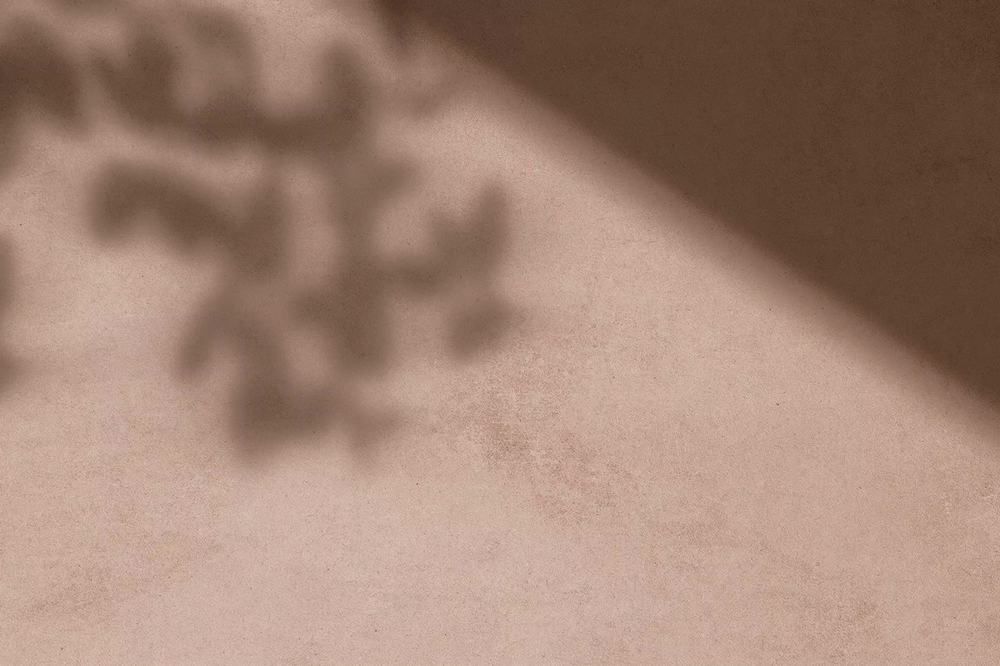
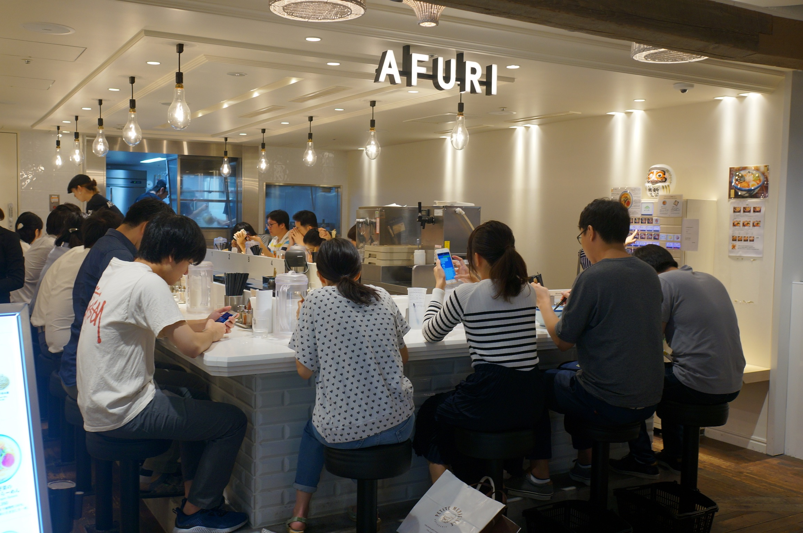
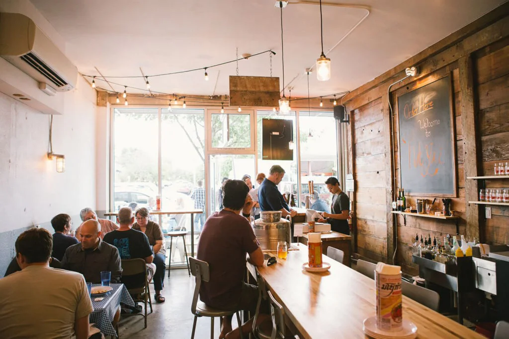
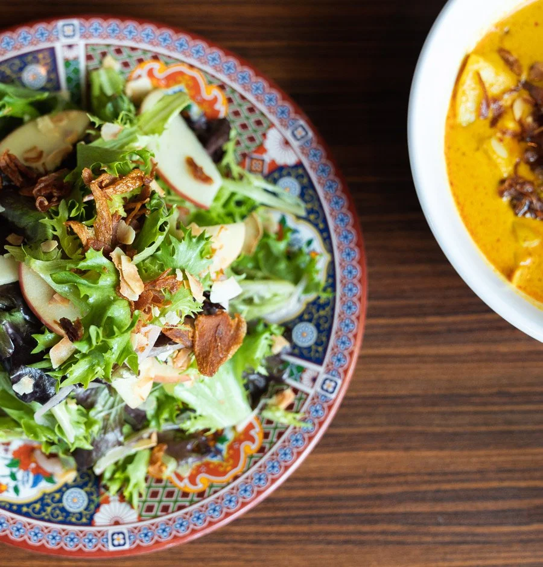
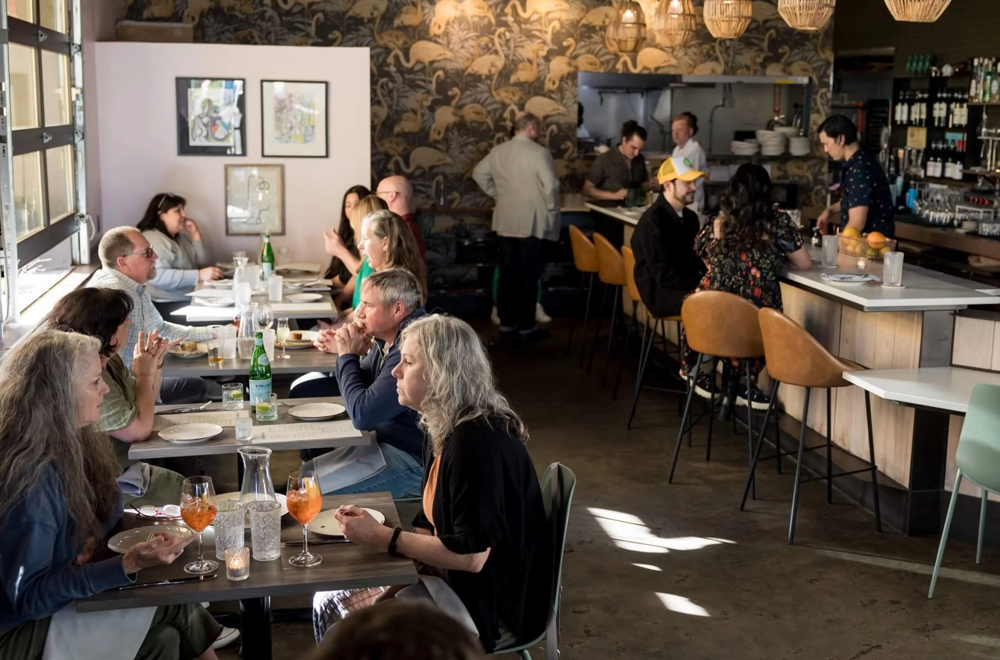
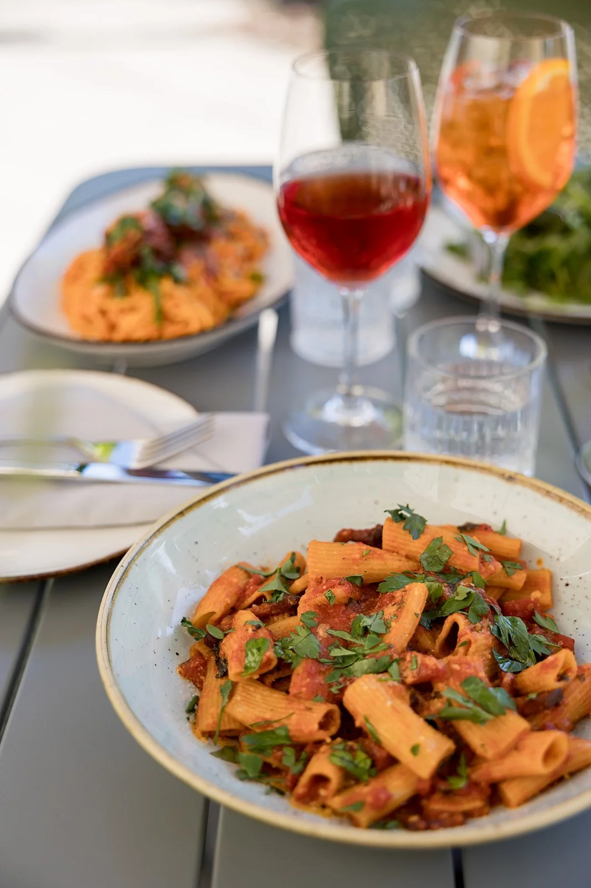
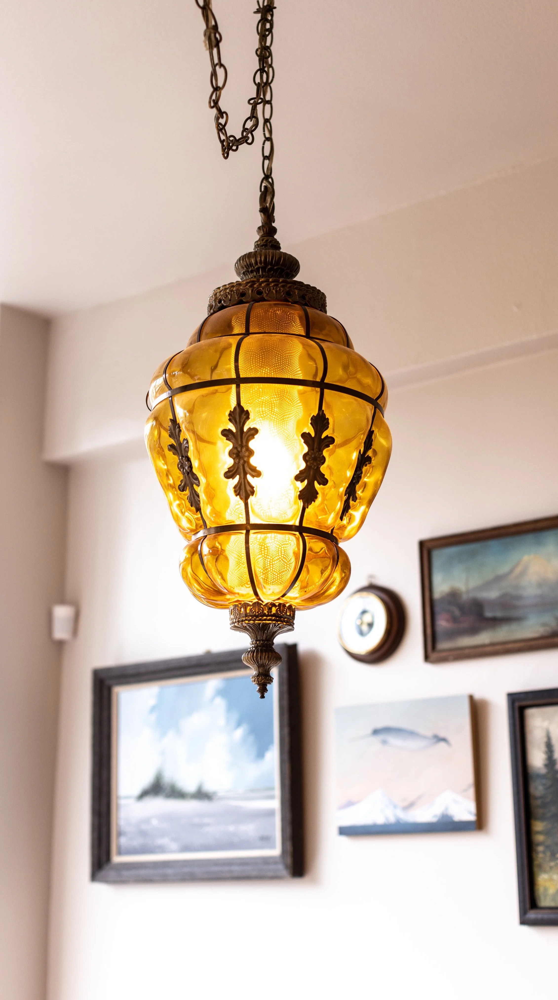
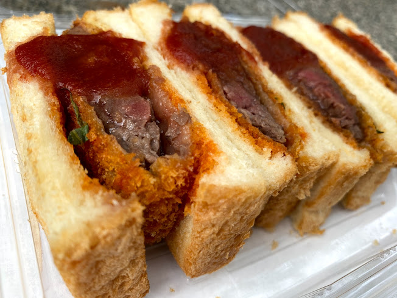

01
レストラン
🌅 朝食 · ブランチ

🌿'">🐾 犬連れパティオテイクアウト
Tin Shed Garden Cafe
ポートランド最有名の犬フレンドリーパティオ。ワンコ専用メニューあり。Guy Fieri訪問歴あり。週末は予約推奨。

🐾 犬連れパティオテイクアウト
Fried Egg I'm In Love
朝食サンドの名店。Mississippi店にはヒートランプ付き犬フレンドリーパティオが2つ。フルバーも充実。
🍣 日本食 · 和食

🔥'">🇯🇵 日本食Dining Month $55
Takibi（Snow Peak内）
Snow Peak本社ビル内の薪火和食。炉端焼き・ラーメン・オマカセ。日本酒充実。Dining Month $55コースあり。火曜定休。

🦑'">🇯🇵 老舗 1988年
Murata Restaurant
1988年創業の老舗寿司バー。毎日変わる黒板メニューにPNWの新鮮魚介が並ぶ。ポートランド日本食の定番。

🍜'">🇯🇵 日本食テイクアウト
AFURI Izakaya
柚子塩ラーメンで名高い阿夫利のポートランド店。居酒屋スタイルで日本酒・クラフトビールとともに。
🌶️ タイ料理 · アジア料理

テイクアウト最強🐾 外席OK
Nong's Khao Man Gai
タイチキンライス一品勝負の神話的名店。紙包みを広げる儀式から始まる至福のランチ。桜の公園でのピクニックに最高。

🍗'">テイクアウト向き
Hat Yai
南タイ式フライドチキン専門。チキン＋パンダンロティ＋スティッキーライスの組み合わせが王道。帰り道のテイクアウトにも。

🥩'">🐾 パティオOK
Eem — Thai BBQ & Cocktails
タイBBQ×カクテルバーの革命的コラボ。スモーキーな豚バラKrapaoと白いカリーが看板。広いパティオで犬連れに最適。
🥥'">
🐾 外席OKKeith Lee 10点
Gado Gado
インドネシア料理の傑作。Keith Lee 10点満点、James Beard候補。ライステーブル4コースで大胆なフレーバーを体験。
🍝 イタリアン · フレンチ

🍕'">James Beard 7回ノミネート
Nostrana
2005年創業の殿堂入り薪窯ピザ＆パスタ。「ポートランドのネグローニの聖地」とも。日曜定休。

🍝'">今イチ推し
Campana
今ポートランドで最も話題のパスタ専門店。自家製パスタのBoar Pappardelle・Tortelli di Zuccaは必食。月火定休。

朝テイクアウトに最適
St. Honoré Boulangerie
本格フレンチベーカリー。早朝から焼きたてのバゲット・クロワッサンが揃う。火曜朝の旅立ちに最適。
🦪 シーフード

🌊'">🐾 外席OK★ 4.8
Jacqueline
当日水揚げの生牡蠣が17–18時は$1のハッピーアワー。Wes Anderson「Life Aquatic」をモチーフにした可愛い内装。要予約。
🍙 おにぎり · サンドイッチ

🥪'">🇯🇵 日本系テイクアウト
TANAKA
大阪スタイルのカツサンド専門。自家製ミルクブレッドに分厚いカツ。海老サンドも人気。旅の弁当にも◎。

🇯🇵 日本系テイクアウト
Yokai Musubi
ポートランド最古参のおにぎり・ムスビ専門店。コシヒカリ使用、日本×ハワイアンフュージョンスタイル。